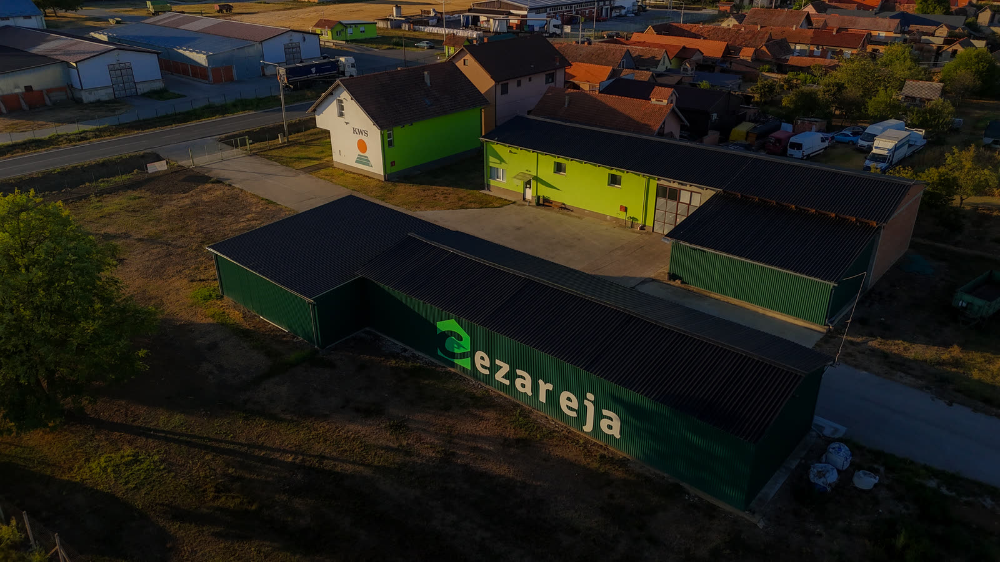
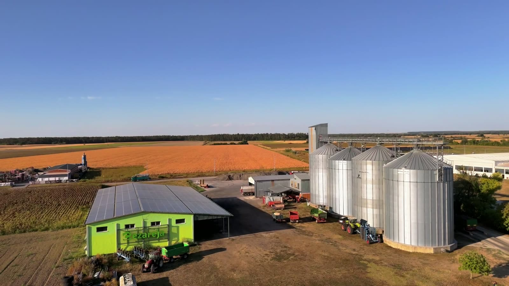
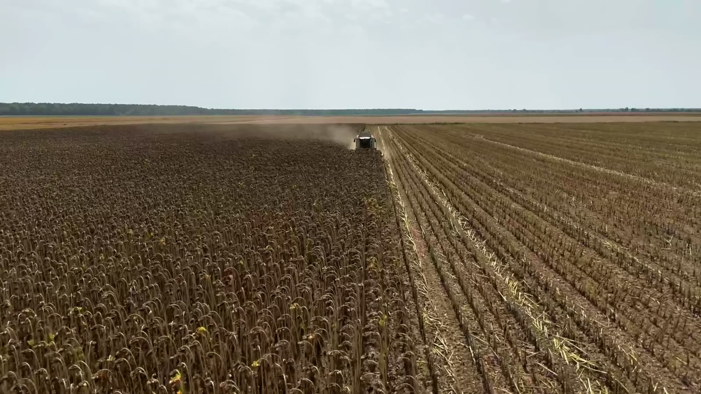

A private Croatian company since 1997
Wholesale of grain, mineral fertilisers, seed and crop protection products — together with our own crop production and seed processing.
Built on cooperation with farmers
Cezareja d.o.o. is a private Croatian company founded on 9 September 1997. Our core business is the wholesale of grain, mineral fertilisers, seed and crop protection products.
Our focus is on cooperation with farmers, and our goal is to be among the leading companies in this sector. Alongside cooperation, we produce our own seed, process seed crops and provide agricultural services.

Honesty, quality and an individual approach
We serve farmers from our own centres in Vukovar-Srijem County and beyond, where we also have our own storage facilities. We build our partnerships on honesty, quality and an individual approach, developing good long-term relationships.
In our daily work we value directness and approachability, and by investing in our people we are building a team whose ideas make up the Cezareja group. Our quality management systems — ISCC EU, ISO 9001:2015, HACCP and GMP+ B3 — confirm the way we work.
The farmers we work with recognise this approach and place more trust in us every year, across every part of our business. Our development plan is to keep growing our cooperation with farmers through financing, advice and monitoring of their production, and to continue selling farm inputs and purchasing agricultural produce.

The foundation of our business
Food and feed safety is our priority.
Customer satisfaction
We take care of the satisfaction of our customers.
Continuous improvement
We keep reviewing our quality system and focus on improvement.
Motivated people
We employ people who do their work conscientiously, and motivate them to succeed.
Risk management
We identify business risks and keep their consequences to a minimum.
Reliable suppliers
We work with suppliers who meet our requirements, without exception.
No compromises
We apply our systems always and without compromise.
Compliance
We comply with all applicable legislation.
Food safety
Food and feed safety is our priority.
